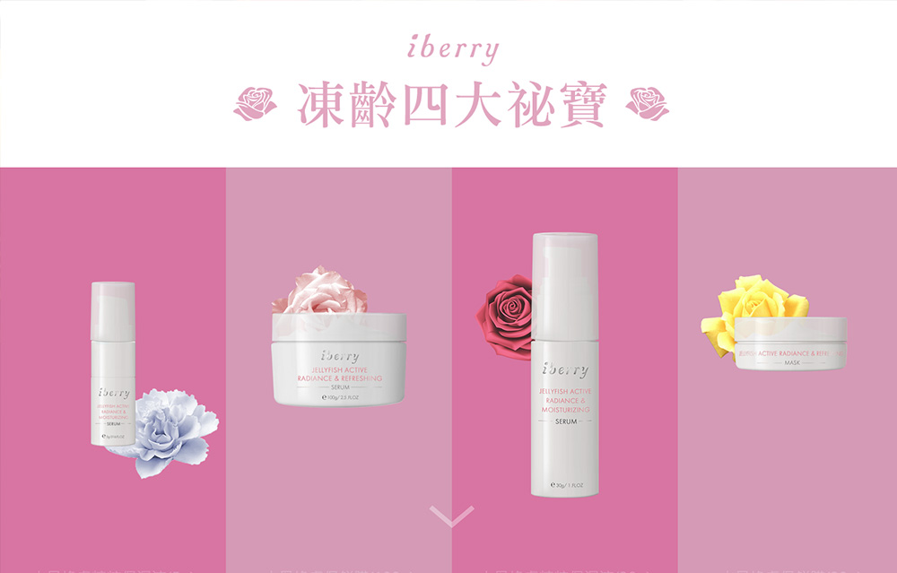
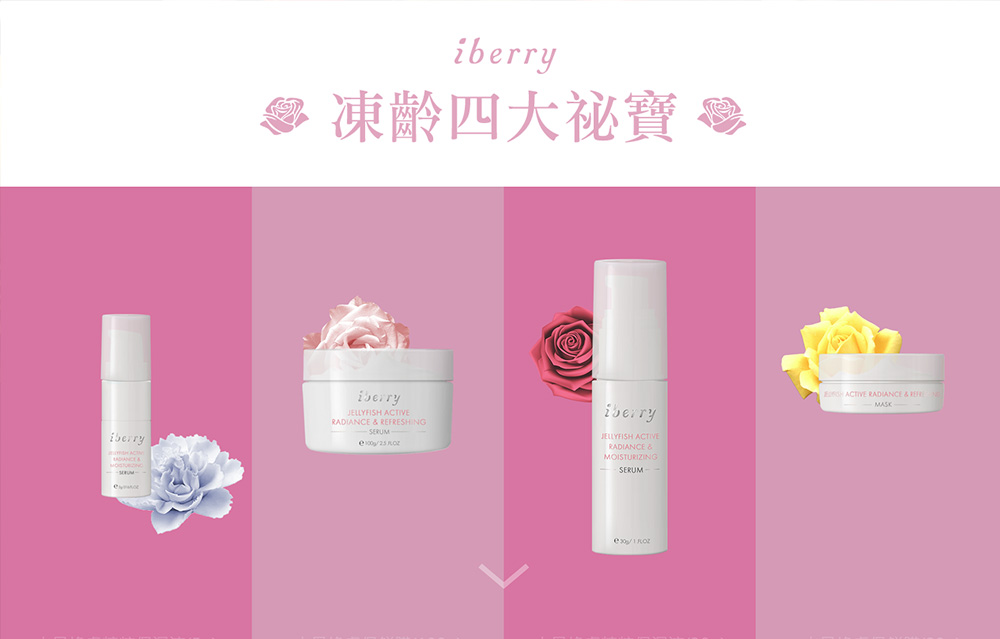
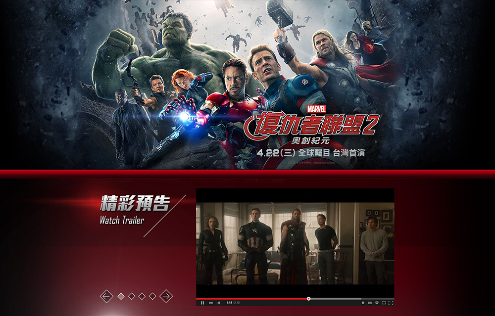
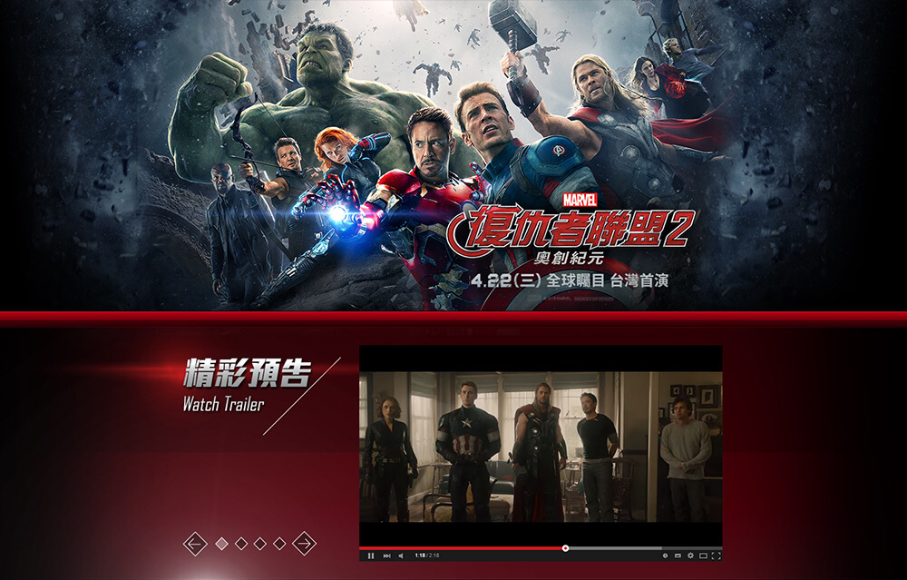
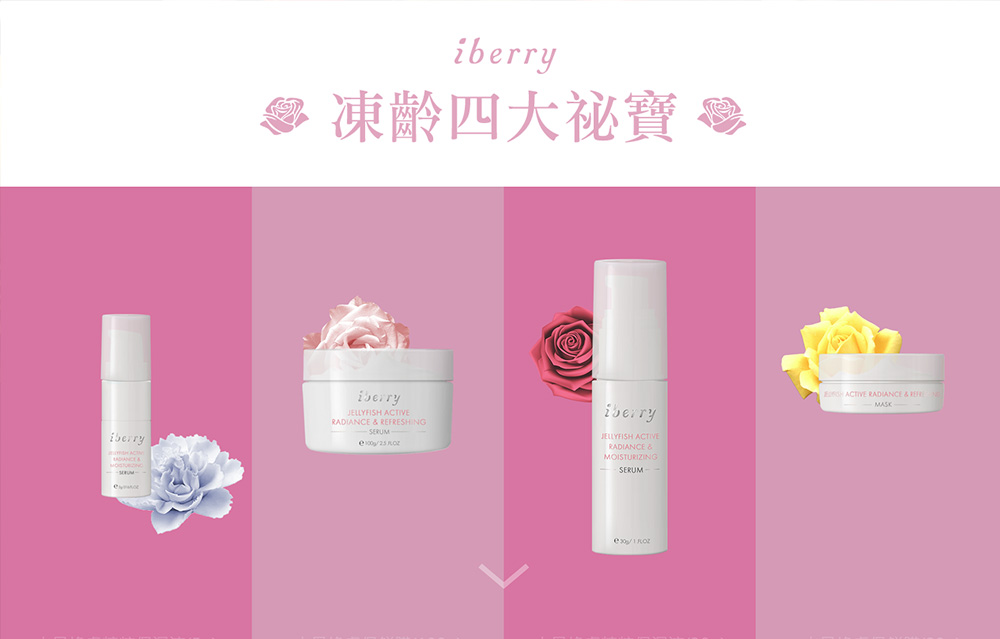
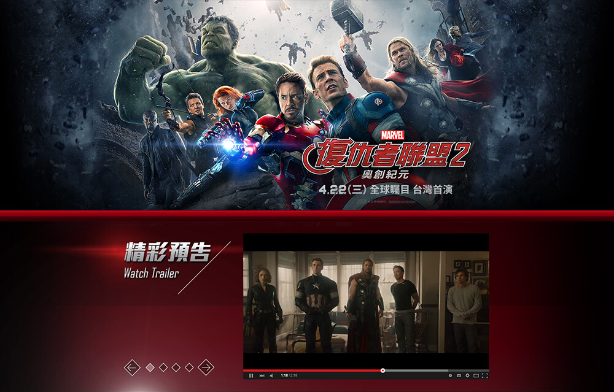
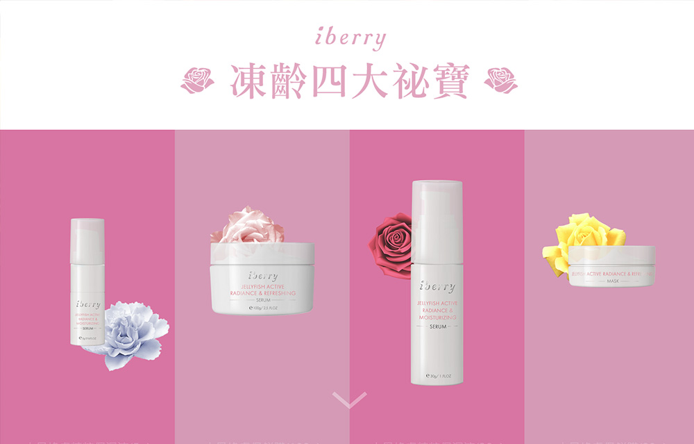
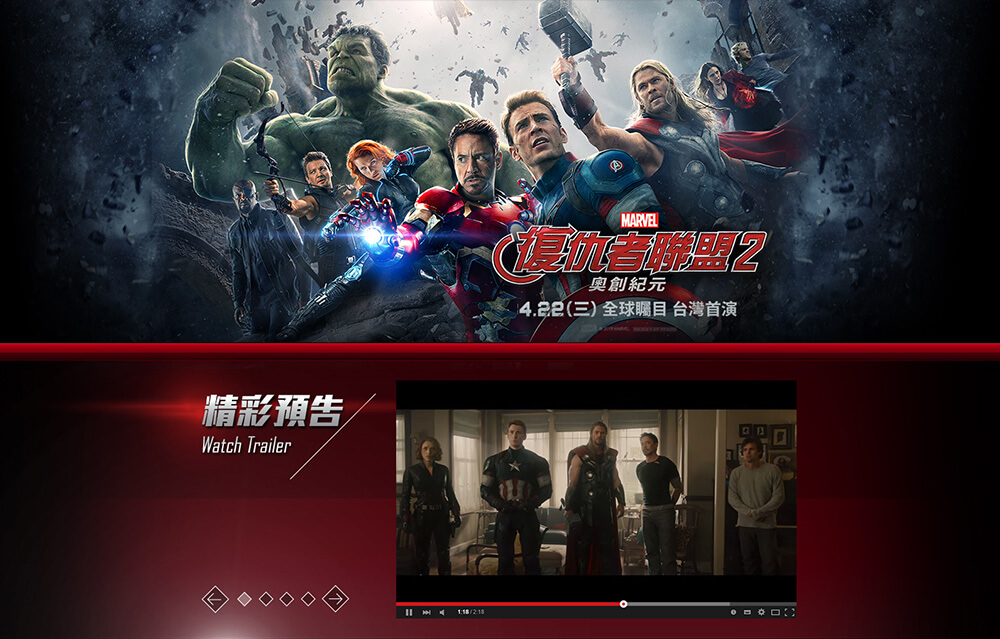

 

 



Ocean Delicate Value
大洋嚴選
Work: Fresh Seafood
Project Year: May 2017
Details: 主視覺、官網企劃
Technique: front-end、html/js animation
現代與日式的結合
大洋嚴選是隨著生鮮直播而興起的新創公司，大洋對品質的堅持，吸引了一批來自金字塔頂端的餐飲業者支持。不到兩年的時間，大洋已是為數不少的懷石料理指定選用的生鮮食材供應商。
我們輔佐著大洋從直播走向批發市場，一起思考如何往品牌的方向前進。客群設立在精緻美食「懷石料理」業者，日式為主現代為輔，大洋的品牌建立之路正要開始...
大洋莊重的品牌標誌
企業識別採用草寫書法，強化中日式印象及嚴謹等元素。
大洋的入口
我們歸納出大洋的定位與「老協珍」相仿，必須樹立記憶點才能讓市場看見，而我們選擇在網頁素材及視覺動態上下手。
不同於仿間電商，大洋採用更仿真、細膩的網頁素材，如日式山海經、原木材質等。
過門 - 更是一場表演
網站對於初次進入的使用者導入過門動畫，用新鮮感來讓顧客記住。
大洋商城
比起首頁，商城更強調的是閱讀性，為此我們選擇在商城進行跳色，除了白底之外，色彩的選用上更為豐富，用來增加購物的熱鬧感。


iBerry BIOTECHNOLOGY
愛蓓莉生技
Work: Biotechnology Factory
Year: Feb 2017
Details: 商品建模、靜態廣告素材、活動網站、APP視覺
Technique: 3D Model、font-end、App UI/UX、html/js animation
代工到研發
iBerry最早是知名美妝品牌朵璽與Dr.Wu的代工廠，累積了大量的生產經驗，近幾年開始著手研發自有配方，以面膜為主打商品開架販售。 他們鎖定輕熟定位輕奢，在今年七夕進行了兩波活動推廣自家產品，悄悄的在保養市場展開自己的新天地。

關於產品模型
「完美無暇的呈現商品全貌」為了這個訴求，我們為iberry打造一系列的產品建模，由數位運算決定最佳的採光、發色及質感。


「極簡」與「熱鬧」的課題
iBerry極簡的主視覺，配上辦活動的熱鬧訴求，兩個迥異的元素合併在一起，成為一次特別的開發經歷。 最終，畫面以潔白乾淨為主體，用動畫襯托節慶氣息。

APP視覺
iBerry APP主要功能為購物，易讀性跟UI/UX是首要考量。與網站不同的是，APP畫面安排更加緊實，減少留白增加內容量。


ITRI 工研院
Work: Big Data
Year: May 2016
Clients:

Details: 資料介接，頁面設計
Technique: font-end、codepen interfacing、charts Animation、html/js
animation
電商成效控管後台
工研院與電商公司合作研究並分析顧客購物的各項數據，試圖算出即將爆紅的產品，為此開發出一套販售成效控管的後台。由我們界接巨資試算成果到前端呈現，大多使用RWD動態圖表展示之。
RWD動態圖表及MENU刻劃
開啟「字幕功能」可看到展示影片解說

客製化推薦清單
工研院合作並開發一套可線上編輯視覺的推薦清單，顧客除了可以自由選擇清單樣式外，更能控制推薦演算方法，達到精準的推薦效果。 該平台可與codepen連動，讓服務電商快速移植到他們想要的購物頁面中。
此研究已實際與紅門互動(EagleEye鷹眼數據)、GoHappy、Friday購物等平台合作上線。
客製化平台操作展示
開啟「字幕功能」可看到展示影片解說

醫療數據後台
此平台可以搜集病人的診療資訊，運算出患病高峰期及二次問診的時間點，進一步對未來發生的疾病進行預測。藉此院方可以提前派發人力、醫療資源等。
此後台開發完成後可與各大醫院進行介接，現今已與台北少數院方成功上線。

旅遊規劃平台
近期隨著自由行遊客日益增加而興起的工作「旅遊規劃師」，協助旅客的喜好客製化當地的行程，讓遊客不用自己辛苦的「做功課」。以這個概念為出發點，「尊榮之旅」旅遊規劃平台進駐各國旅遊規劃師，除了分享各國旅遊資訊外，提供線上客製化各國旅遊行程的服務。
尊榮之旅過門展示


Catch Design
禾意數位
Work: Advertisment
Year: Jen 2015
Clents:


Details: 頁面設計
Technique: font-end、facebook interfacing、html/js animation
台灣最大的電影廣告商
亞洲Disney、漫威MARVEL在台灣區上映的電影，大多由禾意數位操刀，專門設計網頁遊戲及活動等，也為電影製作用於入口網站曝光的各式原生廣告素材。

復仇者聯盟2
復仇者聯盟2上映期間所設計的電影介紹頁面，用於網路活動中。

大英雄天團
大英雄天團上映期間舉辦的網路活動頁面，內容包括「手相偵測」及「與杯麵合影」，該專案使用到影像合成及facebook介接等技術。
LG G3
LG旗艦機與大英雄天團的異業合作網路活動，活動內容為上傳票根抽手機。
LG G4
由於G3合作成效良好，LG G4上市前的首波網路活動接續舉辦，該活動與「痞客邦」部落格介接，讓3C部落客分享使用經驗，並讓網友分享facebook進行抽獎。

魔法黑森林
迪士尼電影魔法黑森林上影期間的電影介紹頁面，該頁面採用大量攝影素材以營造樹林氣氛。

明日世界
電影明日世界上影期間的電影介紹頁面。
腦筋急轉彎原廠活動
由皮克斯原廠舉辦的繪畫、短片徵稿大賽，對象為台灣大專院校以下之學生，成果將於腦筋急轉彎片尾影片中展出。

仙履奇緣
仙履奇緣上映期間所舉辦的網路心理測驗活動，該活動介接facebook分享測驗結果，並可參加電影票抽獎。